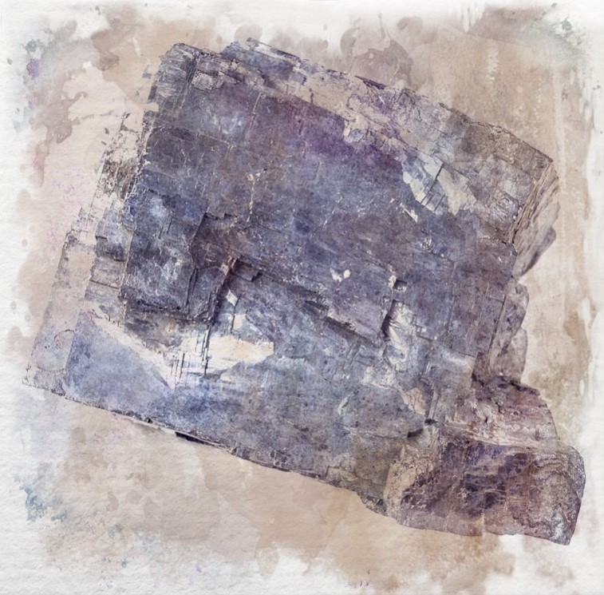

Galena
Formed by heat and chemical changes deep underground, it is an ore containing lead and often silver, it is used in cosmetics to ward off flies and sunlight glare as well as in pottery for a green glaze.